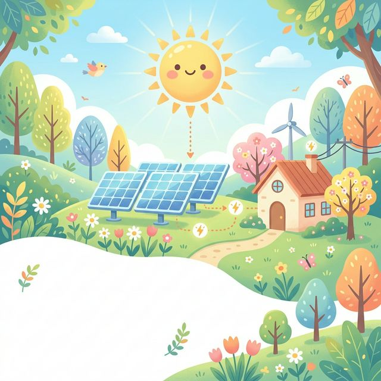

นางสาวเสาวลักษณ์ นาสา
Physics Educator & Researcher
มุ่งมั่นพัฒนาการศึกษาวิทยาศาสตร์ด้วย Active Learning และนวัตกรรม
มุ่งมั่นพัฒนาการศึกษาวิทยาศาสตร์ด้วย Active Learning และนวัตกรรม
อายุ: 22 ปี
สัญชาติ: ไทย
ศาสนา: คริสต์
ปริญญาตรี : สาขาวิชาวิทยาศาสตร์ (เอกฟิสิกส์) ชั้นปีที่ 4
มหาวิทยาลัยราชภัฏอุตรดิตถ์ (มรอ.)
ต้องการสมัครงานใน ตำแหน่ง ครูวิทยาศาสตร์ เพื่อเป็นส่วนหนึ่งของสถาบันกวดวิชาในการช่วยส่งเสริมศักยภาพของผู้เรียนอย่างให้มีประสิทธิภาพ การเกิดผลประโยชน์ต่อนักเรียนด้วย


การวิจัยนี้มีวัตถุประสงค์เพื่อพัฒนาและทดลองใช้รูปแบบการจัดการเรียนรู้เชิงรุกวิชาฟิสิกส์ โดยใช้ปัญหาเป็นฐาน เพื่อเสริมสร้างทักษะการแก้ปัญหาและผลสัมฤทธิ์ทางการเรียนของนักเรียน ระดับชั้นมัธยมศึกษาปีที่ 4 โรงเรียนเตรียมอุดมศึกษาน้อมเกล้า อุตรดิตถ์
สื่อการเรียนการสอนและการทดลองเชิงปฏิบัติการ เรื่อง การหาค่าความร้อนของถุงพลาสติก เพื่อศึกษาทฤษฎีทางความร้อน ส่งเสริมการเรียนรู้ผ่านการลงมือปฏิบัติจริง และสามารถนำความรู้ฟิสิกส์ไปประยุกต์ใช้กับสิ่งแวดล้อมได้
ใช้สถานการณ์ปัญหาเป็นฐานในการกระตุ้นความสนใจ
ผู้เรียนลงมือปฏิบัติ สร้างองค์ความรู้ด้วยตนเอง
เน้นทักษะการแก้ปัญหา และการคิดวิเคราะห์